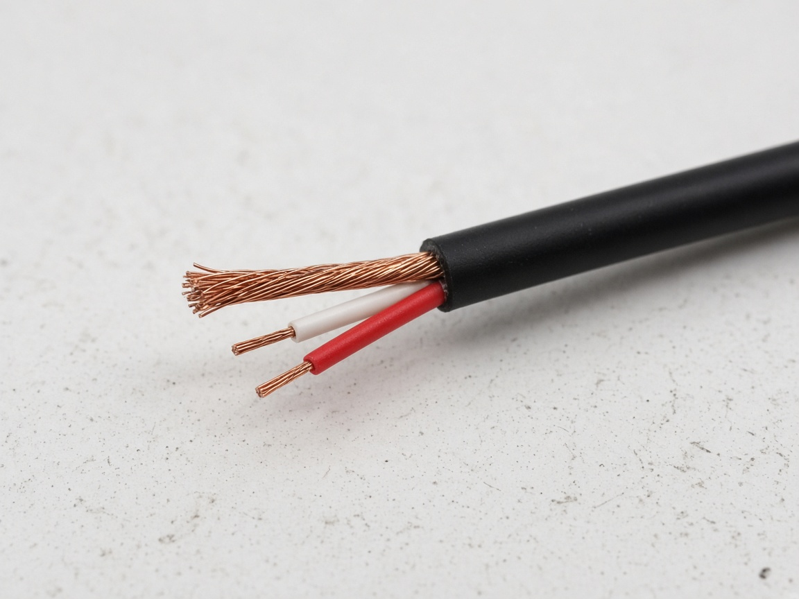
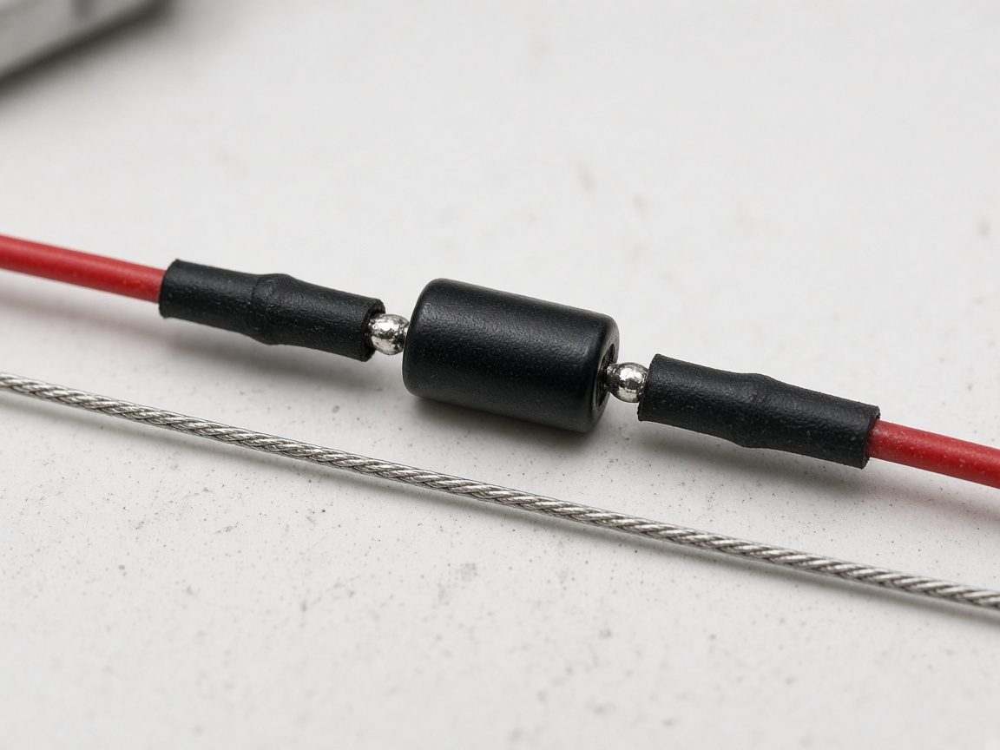
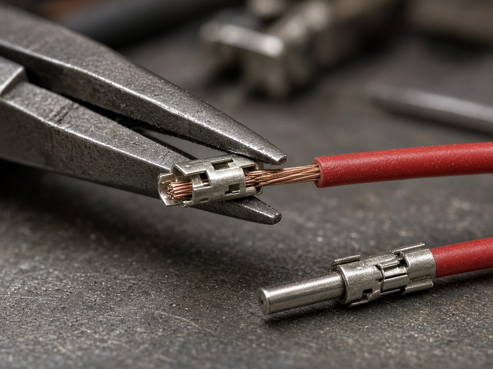
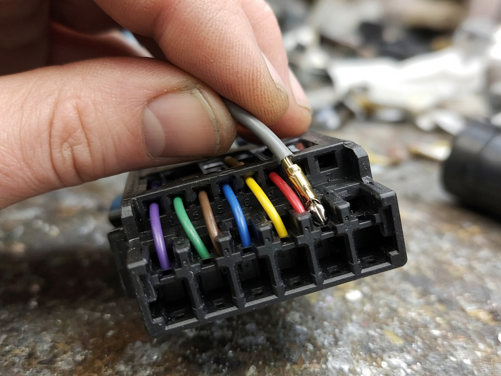

Fixed receive station (indoor, not a vehicle). Parts, pictures, what plugs into what, and step‑by‑step instructions. Radio model M21URM9PW1AN (700/800 MHz, 35 W). October 2026.
What you are building. A listening station. The radio sits indoors on a desk or shelf, receives the P25 traffic and decodes it to normal speech. That speech leaves the radio through a wire on its rear accessory socket (not through a microphone), goes into a USB sound card, and the PC (or Raspberry Pi) turns it into text and fires your triggers. The radio never needs to transmit for this.
There are two completely separate systems. 1. POWER — wall outlet → 13.8 V power supply → Motorola power cable → radio. The radio cannot be powered from USB. At a station the supply runs all the time. 2. AUDIO — radio rear socket → HLN6863B plug → capacitor → 3.5 mm cable → ground‑loop isolator → USB sound card → PC.
Figure 1. Everything in one picture. Letters A–I match the parts list. Blue arrows are the audio path.
1. Your radio — where things plug in
This is the back of your XTL 2500. Only two sockets matter for this build: the POWER socket (2) and the J2 accessory socket (3). The antenna (1) must also be connected for the radio to receive.
1
2
3
#
Socket
What plugs in
1
Antenna (mini‑UHF)
Part J, a 700/800 MHz antenna. Indoors: a mag‑mount on a steel plate near a window. The radio hears nothing without it.
2
POWER (2‑pin)
Part B, the Motorola power cable HKN4191C. Comes from the 13.8 V supply (part A).
3
J2 accessory (26 holes)
Part C, the HLN6863B plug. Audio for the PC comes out of hole 21; hole 14 is its ground.
Figure 2. Rear of your radio. “J2” is simply Motorola’s name for socket 3. “Pin 21 / pin 14” are two of the 26 holes inside it.
Figure 3. Front. The round jack at bottom‑left is for the hand microphone — not used for the PC. The power button (⏻) is the third small round button left of the display.
Never do these
Never put a wire in holes 20 or 26 (speaker) and never let them touch ground. That destroys the radio’s audio amplifier.
Never touch the J2 socket or plug while the radio has power.
Never power the radio from a USB port, phone charger or small wall adapter. It needs 12–13.8 V and up to 12 A.
Never press the microphone PTT (transmit) without an antenna connected.
Why hole 21? It is “RX filtered audio” — a fixed‑level copy of whatever the radio receives. It ignores the volume knob, so the station needs no speaker at all; the PC still hears everything.
2. Parts to buy (with pictures)
Prices are October 2026, US. “Search” is the exact text to type into Amazon / eBay / Google.
Power
A13.8 V DC power supply, 20 A or more
Search:13.8V 25A power supply ham radio — e.g. Samlex SEC‑1223 (23 A), Astron SS‑30M, Pyramid PS26KX
Price: $70–160
Connects to: wall outlet (AC in) → part B on its red/black posts
Why: receiving takes 3.2 A, but a radio on a trunked system sends short automatic registration bursts at 12 A. 20 A keeps the voltage steady during those.
BMotorola power cable HKN4191C
Search:HKN4191C (10 ft, 12 AWG, 20 A fuse). 20 ft version: HKN4192C.
Price: ~$28
Connects to: 2‑pin plug → radio POWER socket (2). Bare ends → red (+) / black (−) posts on part A.
Why: it is the only plug that fits the radio’s power socket, and it carries the fuse.
Connects to: 3.5 mm plug of part F goes in one end; other end goes into the RED jack of part H.
Why: radio and PC are on different grounds; without it you get a loud hum / alternator whine.
HUSB sound card — UGREEN 30724
Search:UGREEN USB audio adapter 30724 (Amazon B01N905VOY). Alternative with true line‑in: Behringer UCA202 (~$30).
Price: ~$10
Connects to: isolator (G) → RED jack. USB end → PC / Pi.
Why: turns the audio wire into a USB input device. No drivers on Windows or Pi.
Antenna
J700/800 MHz antenna with mini‑UHF plug
Search:800 MHz mag mount antenna mini-UHF (Laird, Tram, Browning, ~$20–35). Put the magnet on a steel plate or cookie sheet (ground plane) near a window.
Better reception: outdoor 800 MHz base antenna + mini-UHF male to N female adapter.
Connects to: radio antenna socket (1).
Why: no antenna = nothing to transcribe. Higher and closer to a window = more traffic heard.
Optional: speaker for the room
The XTL 2500 has no built‑in speaker. The PC does not need one. If you also want to hear traffic in the room, a Motorola external speaker (e.g. HSN4031) goes on the speaker leads already in the HLN6863B — not on holes 21/14.
Tools and small stuff
Item
Notes
Wire stripper / cutter
For the thin 3.5 mm cable (22–26 AWG).
Small needle‑nose pliers or crimp tool
To close the crimp pins (D). Pliers work if you squeeze carefully.
Soldering iron + solder (or 2 small butt‑splice crimps)
To join the capacitor into the wire. Twist‑and‑tape is fine for a first test; solder it for the permanent station.
Heat‑shrink tubing or electrical tape
Cover the capacitor joints so they cannot touch anything.
Multimeter (~$15, strongly recommended)
To confirm which wire is tip and which is sleeve, and to check the supply voltage.
Steel plate / cookie sheet
Ground plane for the mag‑mount antenna. About 12 × 12 in.
Cost: audio parts ≈ $80 (≈ $50 with a used HLN6863B). Power supply + cable ≈ $100–190. Antenna ≈ $25–35.
3. Connection map — what touches what
#
This…
…plugs into / joins…
Details
1
Power supply A — AC cord
Wall outlet
Keep the supply switched OFF until step 11.
2
Power cable B — bare RED end
Supply A — red (+) post
Fuse holder stays on the red wire.
3
Power cable B — bare BLACK end
Supply A — black (−) post
4
Power cable B — 2‑pin plug
Radio POWER socket (2)
Fits one way only; push until it latches.
5
HLN6863B C — black block
Radio J2 socket (3)
Only after the pins (D) are installed. Tighten its screw.
6
HLN6863B C — red fused “ignition” wire
Supply A — red (+) post
Tells the radio “the vehicle is on”. At a station it just stays on the (+) post permanently.
7
3.5 mm cable F — inner (signal) wire
Capacitor E — lead 1
Cut the signal wire; capacitor bridges the cut.
8
Capacitor E — lead 2
Crimp pin D → HLN6863B hole 21
Either lead can face the radio (bipolar).
9
3.5 mm cable F — shield (ground) wire
Crimp pin D → HLN6863B hole 14
No capacitor on this wire.
10
3.5 mm cable F — plug end
Isolator G — female end
11
Isolator G — male plug
USB sound card H — RED jack
Red = input. Green = headphones (not used).
12
USB sound card H — USB‑A
PC / Raspberry Pi I
Shows up as “USB Audio Device”.
13
Antenna J — mini‑UHF plug
Radio antenna socket (1)
Mag‑mount on a steel plate by a window; or outdoor antenna via adapter.
Figure 4. The one cable you build. Blue = signal from hole 21, through the capacitor, to the plug’s tip. Grey = ground from hole 14 straight to the plug’s sleeve. If your cable has two inner wires (stereo), twist them together and treat them as one signal wire.
4. Step‑by‑step build
Every step has a picture. Drawings are exact for this build; photos show what the job looks like in your hands (generic parts in some photos).
Part A — Build the audio cable (nothing plugged in yet)
Cut the 3.5 mm cable
Measure about 18 inches from one plug and cut the cable there. You will use that 18‑inch piece (one plug + wire). The rest is spare.
Strip 1 inch of the outer black jacket from the cut end. Be gentle — the wires inside are thin.
Inside you will find a bare braided or foil shield wrapped around one or two insulated wires (often red and white).
Twist the shield strands together into one wire. If there are two insulated wires, strip ¼ in from each and twist them together — they become one signal wire.

After stripping: bare braid = shield (ground); red + white = signal (twist them together).
Confirm which wire is which (multimeter, continuity / beep mode)
One probe on the plug’s tip (the very end), other probe on the signal wire → it should beep.
One probe on the plug’s sleeve (the long metal part next to the cable), other probe on the shield wire → beep.
Signal to shield → no beep. If it beeps, strands are touching; separate them.
No multimeter? The shield is always the bare braid; the insulated wires are always signal.
Continuity (beep) mode. The ring does not matter for this build.
Splice the 2.2 µF capacitor into the signal wire
About 3 inches from the cut end, cut the signal wire only. Strip ¼ in from both new ends. Leave the shield wire whole.
Slide a piece of heat‑shrink onto each end before joining (easy to forget).
Twist one capacitor lead onto one cut end, the other lead onto the other cut end. Solder both joints (or use two small butt‑splice crimps). Trim the leads short.
Direction does not matter — a bipolar capacitor has no + or −.
Shrink or tape each joint so no bare metal is exposed. The capacitor is now “in series on pin 21”, exactly as the notes say.

Finished splice: capacitor in the signal wire, both joints under heat‑shrink; shield wire runs past untouched.
Crimp the two Motorola pins
Strip ⅛–3/16 in of insulation from the end of the signal wire (the end past the capacitor) and from the shield wire.
Lay the bare copper in the small barrel of a pin; fold the small tabs over the copper, then the larger tabs over the insulation. Squeeze firmly with the crimp tool or pliers.
Pull gently on each wire. If a pin slides off, re‑crimp. A dab of solder on the copper crimp adds strength.

Crimping with needle‑nose pliers; a finished pin below. Generic pin shown — yours is part D.
Push the pins into the HLN6863B housing
Look at the wire side (back) of the black HLN6863B block. Tiny numbers are molded next to the holes. Find 21 and 14. Some positions already have wires (ignition, speaker) — leave them alone.
Push the signal pin into hole 21 until it clicks. Push the shield pin into hole 14 until it clicks.
Tug each wire lightly — it must not come back out.
Check with the meter: signal pin ↔ plug tip = no beep (the capacitor blocks DC — that is correct); shield pin ↔ plug sleeve = beep.

Pin goes in from the wire side until it clicks. Generic housing shown — the HLN6863B block looks different but works the same way.
Part B — Plug everything into the radio (power still OFF)
Connect the HLN6863B to the radio
Push the HLN6863B block onto the J2 socket (marker 3, far right on the back of the radio). It only goes on one way. Tighten its screw finger‑tight.
Keep the 3.5 mm plug end free for now. Do not plug it into anything that is powered.
▼ plugs onto J2
Your radio, rear right. The HLN6863B block goes on this 26‑hole socket.
Connect the power cable to the radio
Push the 2‑pin plug of the HKN4191C into the POWER socket (marker 2) until it latches.
Check the fuse holder on the red wire has its 20 A fuse in it.
▼ 2‑pin plug into POWER
The 2‑pin socket just right of the heat‑sink fins.
Connect the antenna
Put the mag‑mount on the steel plate, as high and as close to a window as the cable allows (away from the PC and the power supply).
Screw its mini‑UHF plug onto the antenna socket (marker 1). Finger‑tight is enough. Without an antenna you will hear almost nothing.
▼ mini‑UHF onto the antenna socket
Rear left. Antenna on its steel plate by a window.
Build the chain to the PC
3.5 mm plug (from Part A) → female end of the ground‑loop isolator.
Isolator male plug → RED jack of the UGREEN adapter. (Green is for headphones — ignore it.)
UGREEN USB end → any USB port on the PC / Pi.
3.5 mm plug from Part A
→
Isolator plug into female end
→
UGREEN isolator into RED jack
→
PC / Pi USB port
Part C — Power up
Wire the power supply (supply switched OFF)
HKN4191C red bare end → supply red (+) post. Black bare end → supply black (−) post.
HLN6863B red fused ignition wire → also onto the supply red (+) post (two wires on the same post is fine). This is the “ignition sense” the radio looks for.
Plug the supply into the wall.
Front of the supply. Posts are usually screw‑down binding posts: loosen, wrap the bare wire, tighten.
Switch on
Switch the supply on. The meter (or a multimeter on the posts) should read about 13.8 V.
Press the radio’s power button (⏻, the lowest of the three small buttons left of the display). Display lights, radio beeps.
Select the channel / talkgroup you want to monitor. The volume knob does not matter for the PC — pin 21 is fixed level.
Your radio, front left. Supply ON first, then this button.
Part D — PC setup
Windows (station PC)
Settings → System → Sound → Input. Choose USB Audio Device (sometimes “USB PnP Sound Device”).
Set input volume to about 30 % to start. If there is a “Microphone boost” option under device properties, set it to 0 dB.
Watch the input level meter during a transmission. It should bounce clearly but not hit the top. Raise or lower the input volume until it peaks around ⅔.
What the Windows 11 Sound page should look like (names vary slightly by version).
Point the listener at the USB device
In the device folder run python list_audio_devices.py — it prints every input with its index number.
In device/config.json set input_device to that index or a unique part of its name. Set audio_source to radio_line so the device record says it is wired to the radio.
Run python listener.py. The start‑up lines show mic: USB Audio Device. Watch its level during a transmission; adjust the Windows input volume if it clips.
Raspberry Pi: same two commands inside the venv; arecord -l also lists the USB card.
For a station that runs unattended, start the listener automatically (Task Scheduler on Windows, the systemd service on the Pi).
> python list_audio_devices.py
Available audio devices:
0 Microphone Array (Realtek)
1 USB Audio Device ◀ this one
...
device/config.json
{
"device_id": "station-1",
"audio_source": "radio_line",
"input_device": "USB Audio Device",
"sample_rate": 16000,
...
}
> python listener.py
mic: USB Audio Device
Index 1 would work too. Keep the rest of config.json as it is (keys, Supabase, ntfy).
Station notes
Placement: radio on a hard surface with air around the heat‑sink fins; antenna by a window; supply and PC on the same power strip (less hum).
Always on: supply stays on, ignition wire stays on (+), radio stays on. It uses about 45 W while listening.
Keep the isolator: the radio supply and the PC are still two different ground paths through the mains.
Trunked systems: if the radio is programmed for a trunked P25 system, it transmits short registration bursts on its own. That is normal for a radio authorized on that system — and the reason for the 20 A supply and the “antenna always connected” rule.
Transcription and triggers happen entirely on the PC. Nothing in the hardware changes when you add or change keywords.
Troubleshooting
Problem
Check
Radio is on but never receives anything
Antenna plugged in and on its steel plate? Try another spot near a window. Right channel / talkgroup selected? Signal bars on the display?
Radio does nothing when I press power
Ignition wire from the HLN6863B must be on the supply (+). Supply switched on and reading 13–14 V? Fuse in the HKN4191C blown? Power plug latched?
Windows meter does not move during a transmission
Pins fully seated in holes 21 and 14? Capacitor joints solid (meter: pin 21 ↔ capacitor near lead = beep; capacitor far lead ↔ plug tip = beep)? Plug pushed all the way into the isolator and the isolator into the RED jack? Right input device selected?
Still silent, everything checks out
In CPS: Radio Configuration → Radio Wide → Advanced, check the rear accessory audio options. On most XTLs pin 21 is always live.
Loud hum or whine
Isolator in the chain? Try the PC on battery for a moment — if the hum disappears, it is a ground loop; keep the isolator and keep the supply and PC on the same outlet strip.
Too quiet
Raise Windows input volume. Still low → try the CPS Accessory → Rear RX audio gain.
Distorted / clipping
Lower Windows input volume; make sure mic boost is 0 dB.
Constant hiss between transmissions
Normal when the squelch opens. The software audio gate (next to‑do in the notes) handles this.
 3.5 mm plug
3.5 mm plug